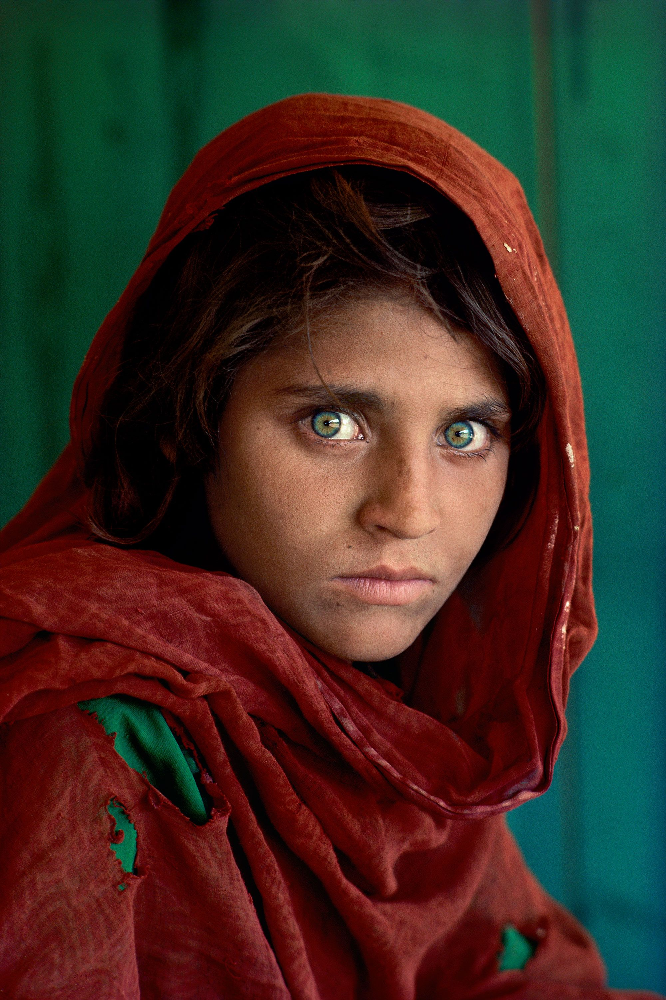
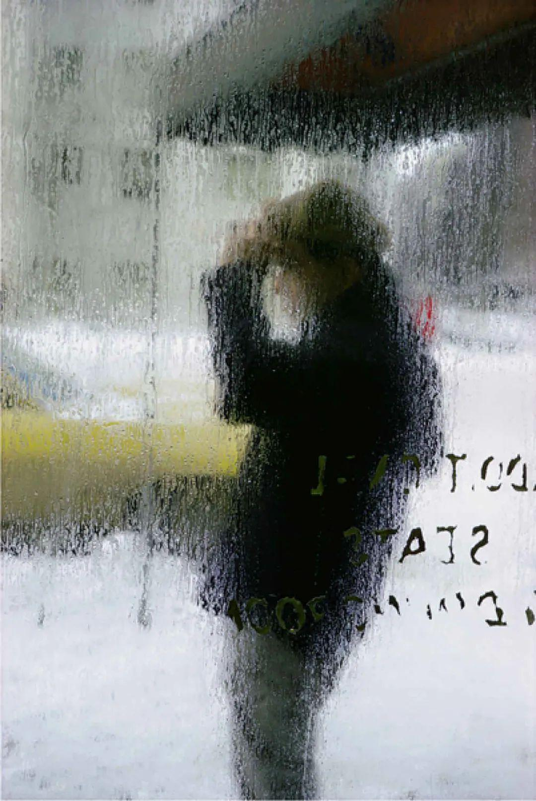

论摄影的透明与不透明
现在特别流行各种“图鉴式”摄影——拍鸟、拍虫、拍飞机、拍火车。
与其说是在拍照，这些照片给我的感觉更像是“收藏”。大家热衷于精准地认出照片里的罕见鸟种，或者打卡某些稀有的飞机或者火车。这些照片基本都“主体突出”，多数采用中心构图，照片像一个巨大的盒子，把收藏的对象完整、无损地装在里面。
这种把照片看作“装东西的盒子”的倾向，让我想起了一个非常有意思的分类角度：透明的照片，与不透明的照片。在 1984 年，哲学家 Kendall Walton 就提出过“摄影的透明性”，他觉得看一张照片本质上就是透过媒介直接在“看”真实的世界。而 MoMA 的传奇策展人 John Szarkowski 更有趣，他在 1978 年办过一个经典的展览叫《镜与窗》（Mirrors and Windows），把摄影师分成了两派：“窗”派致力于像玻璃一样透明地记录外部世界；而“镜”派则是不透明的，它反射出来的是摄影师的主观内心。
相应地，看照片的人，其实也可以分成两派：“透明型”和“不透明型”。
两种截然不同的观看者
“透明型”观看者，也就是前面说的图鉴党。
在他们眼里，照片最好是 100% 透明的。大家看照片的时候，目光直接“穿透”了照片这层纸，结结实实地落在背后的物体上。至于构图好不好看、光影棒不棒，反而没那么重要，甚至是种干扰——能把那只罕见的鸟看清楚就行。
比如下面这张 Steve McCurry 拍的《阿富汗少女》，大家第一眼看到的一定是那双极具穿透力的眼睛，视线完全穿透了相纸本身。照片本身倒变成“透明”的，照片直接唤起了我们对后面那个三维的，立体的人物的想象。

而“不透明型”观看者，通常多少受过一些视觉训练或者了解摄影史。
他们看照片时，视线会被照片的“表面”拦下来。注意力会不由自主地放在几何构图、明暗对比、色块分布上。对他们来说，照片是一张实实在在的二维平面图像，而不是一个用来装东西的玻璃盒子。
就像 Saul Leiter 的这幅街头摄影，大面积的色块和玻璃反光，逼着你去欣赏画面表面的美感，而不是一眼去认这是哪条街。

透明的宿命与媒介特异性
虽然目前为止显得我想批判透明型观看者，但细想之下有一个很尖锐的问题：如果只追求纯平面的形式感或者视觉的美感，摄影跟画画或者现在的 AI 生图，在艺术形式上还有什么根本区别？
这里不得不提 Roland Barthes 在《明室》里说的一个核心词：“此曾在”（ça a été）。一张真实的照片，必然对应着现实里曾经真的存在过的东西。这种“曾在”的属性，是摄影跟其他视觉艺术最根本的区别。
所以从这个角度看，“透明”其实是照片逃不掉的宿命。因为那只飞翔的鸟、那座破房子，确实在按快门的那一瞬间反射过光子，在CMOS上留下了物理印记。
丢掉了“透明”，摄影也就失去了灵魂。
想象与实在：不透明的栖身之所
那么既然“透明”是基石，“不透明”的视觉语言又该放在哪呢？
现实中那个纯粹的“物”，其实我们是触碰不到的。照片里的物体影像总是停留在“想象中”，是我们脑海中对现实的物产生的视觉图像。
这就意味着，照片里的物体不仅是客体本身，它还不可避免地叠加了“拍摄时摄影师对这个物体的感觉”。
而这恰恰就是“不透明”视觉语言发挥作用的地方：
同一物体通过不同的摄影师，以完全不同的手法、角度、色彩、构图去呈现，带来的观看体验是截然不同的。
透明性与视觉习惯
是什么让一张照片变得透明？我想，是视觉习惯。如果一张照片完全符合我们对客观世界的认知和期待，那它就是透明的。例如阿富汗少女的照片，它呈现的视觉语言符合我们紧盯着人物时看到的图像：我们盯着人物眼睛看，人物处于我们的视觉中心，我们不自觉地忽略周围的环境（这通过背景虚化很好地模拟了人类注意力的分配）。它非常符合我们日常生活中类似场景的视觉习惯，因此它是透明的。
而不透明性恰恰来源于某种“阻碍”，或者对习惯的打破：夸张的线条，平面化的构图，利用照片边框大量截断物体，强烈的反差等等。这些视觉元素会阻碍我们像“透过玻璃”一样看待照片，强迫我们注意到画面本身，而不是照片后面的物体。
结语
透过照片，你看见了世界；而在照片表面，你看见了自己。
参考文献
- Walton, K. L. (1984). Transparent Pictures: On the Nature of Photographic Realism（《透明的图片：论摄影现实主义的本质》）. Critical Inquiry, 11(2), 246-277. (探讨摄影的“透明性”假说)
- Szarkowski, J. (1978). Mirrors and Windows: American Photography since 1960（《镜与窗：1960年以来的美国摄影》）. The Museum of Modern Art. (提出“窗”派客观记录与“镜”派主观表达的二元对立)
- Barthes, R. (1980). Camera Lucida: Reflections on Photography（《明室：摄影笔记》）. Hill and Wang. (探讨摄影的“此曾在”与本质特性)
- Lacan, J. (1978). The Four Fundamental Concepts of Psycho-Analysis（《精神分析的四个基本概念》）. W.W. Norton & Company. (关于“实在界”、“想象界”与视觉凝视理论的探讨)